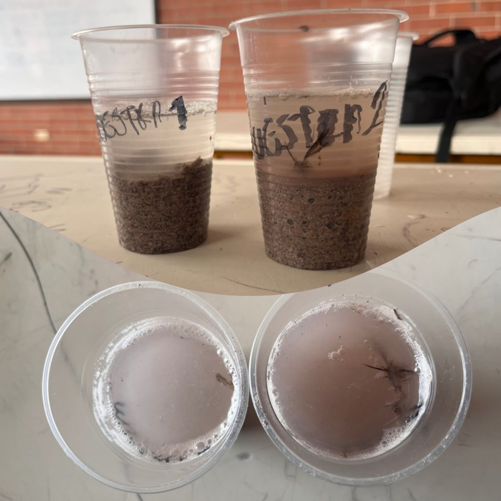

TRABAJOS HECHOS EN EL COLEGIO
"work done at school"
1. Como primer paso, analizamos como estaban los suelos de nuestro colegio de dos formas distintas
Primero: Vimos algunos tipos de suelo que habian en el Ofelia, observamos que mayormente habia tierra negra, arcillada, arenosa, piedras, raices y pasto. Esto significa que en las partes donde hay tierra negra se caracteriza por ser fértil y húmedo, por el contrario, en las partes donde se observa suelo arcilloso significa que es un suelo no muy fértil y seco.
Segundo: Tomamos dos muestras del mismo tipo de suelo, a una le agregamos vinagre y a la otra agua con bicarbonato. Despues de cierto tiempo analizamos cada muestra y segun lo observado llegamos a la conclusion que el suelo analizado es ácido.
2. Despues, averiguamos si este suelo se podia enriquecer a traves de algo sostenible y efectivo. Descubrimos que a traves del abono y compostaje se puede alimentar el suelo gracias a las vitaminas que estos le dan al suelo y asi este se puede volver apto para cultivos. Cabe aclarar que esto es pensado para cultivos, huertas, etc. No como tal para los suelos de algunas partes de las zonas verdes que son secos y muy poco fertiles.
3. Gracias al profesor Nicolas Gallego pudimos llevar a cabo esta iniciativa, para la cual se necesitaban los siguientes materiales:
- Residuos orgánicos secos
- Lixiviados
- Estiércol
- Tierra negra
- Y por supuesto, la huerta escolar!
Eliminamos toda la maleza del alrededor que tenia la huerta, ademas una poca que tenia como tal cada huacal.